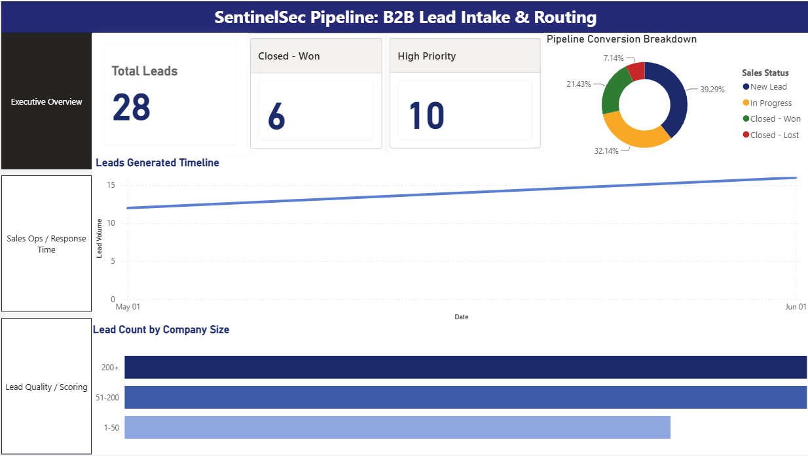
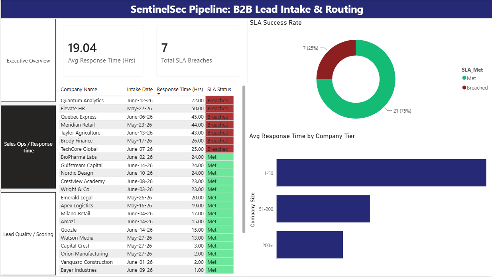
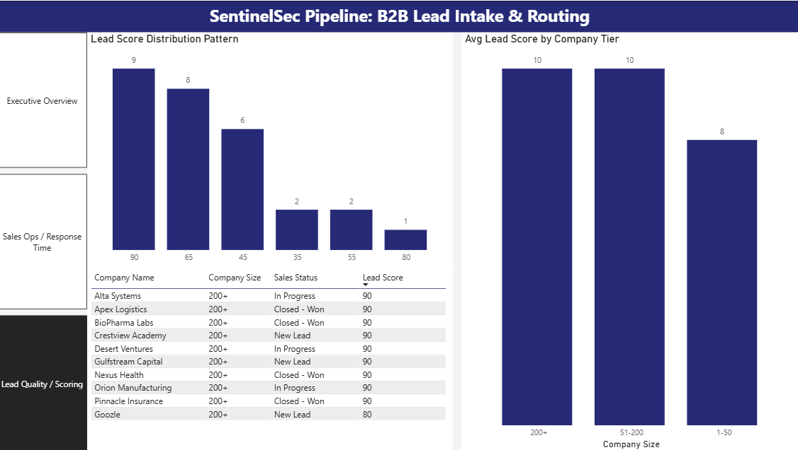

Project 01 · B2B SaaS · RevOps
Automated lead management system eliminating manual data entry, scoring leads algorithmically, and surfacing SLA breach alerts in a 3-page Power BI executive dashboard.
SentinelSec, a B2B SaaS cybersecurity company, was losing high-value enterprise opportunities to a broken intake process. Inbound leads were logged manually with no prioritization — a 5-person startup and a 500-person enterprise account sat in the same queue. Response times routinely exceeded the company's 24-hour SLA, and leadership had zero visibility into where the pipeline was breaking down.
In B2B sales, response speed correlates directly with conversion. Without a system to flag, score, and route leads automatically, SentinelSec was structurally guaranteed to keep losing deals to slow follow-up.
A zero-touch data pipeline that removes manual entry entirely and layers in automated scoring, routing, and real-time monitoring.
A multi-variable composite score capped at 100, built with nested IF/AND/REGEX logic evaluating four dimensions at intake:
Total lead volume, pipeline conversion rates, company tier distribution, leads over time.
Avg response time KPI, SLA breach count, color-coded breach queue, response time by company tier.
Score distribution, avg score by tier, Top 10 priority queue sorted by conversion likelihood.


